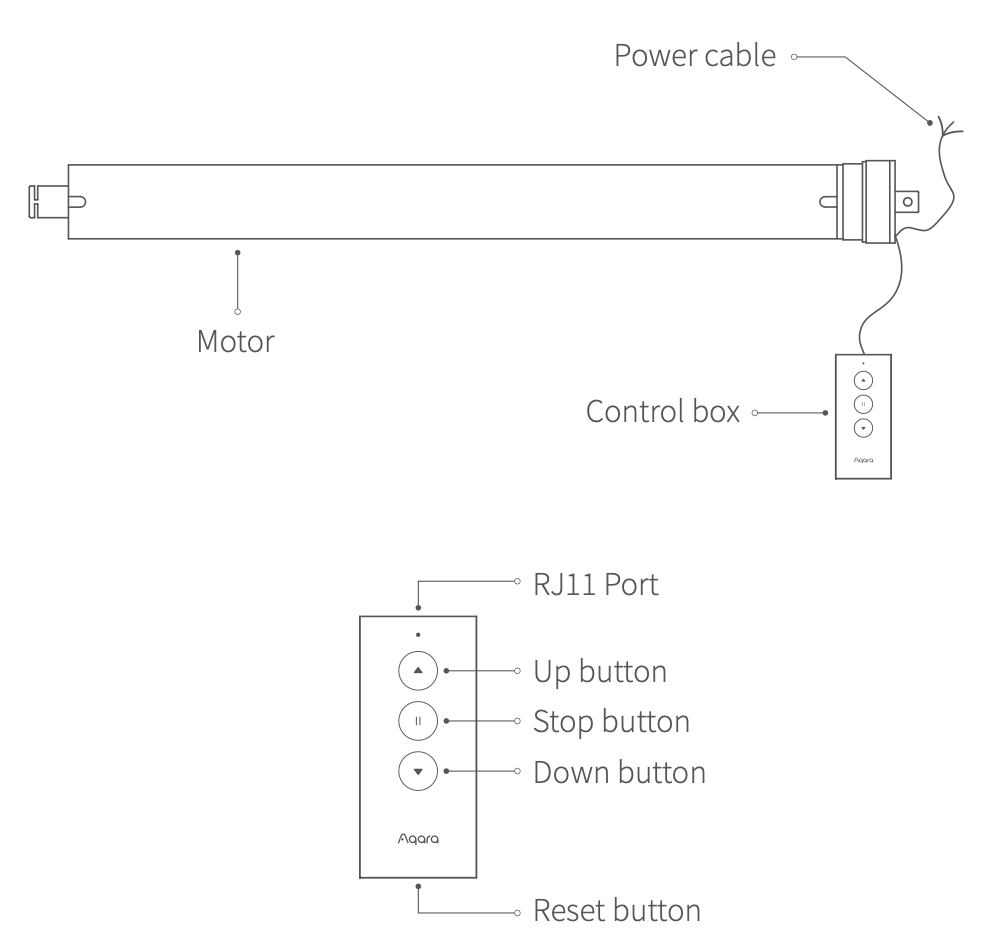
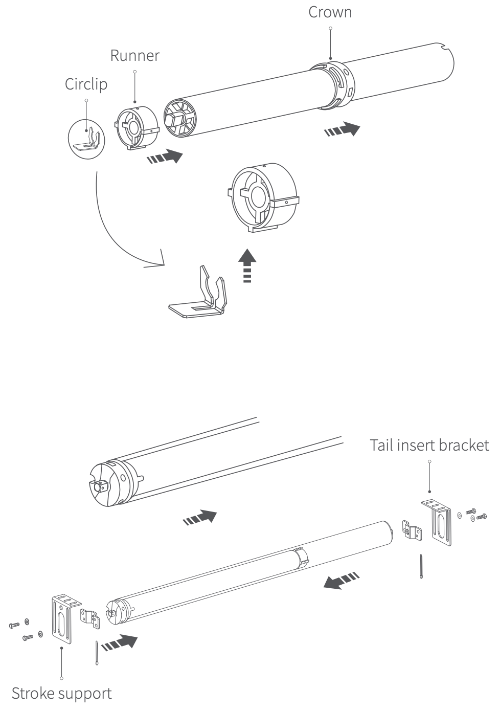
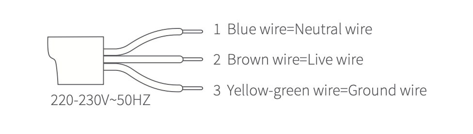

37 스마트 블라인드 컨트롤러
37.1 제품 소개
Aqara 스마트 블라인드 컨트롤러는 전기 스마트 커튼 모터로, 일반 롤러 블라인드, 샹그릴라 블라인드 및 기타 커튼을 자동화 할 수 있습니다. 이 제품은 내장된 Zigbee 무선 통신 모듈을 갖추고 있습니다. 허브 기능을 갖춘 Aqara 기기와 페어링하면 커튼의 원격 제어, 특정 시간에 열고 닫기, 여러 기기 간의 스마트 연결과 같은 기능을 구현할 수 있습니다.
- 본 제품은 허브 기능을 가지고 있는 아카라 장치(M2, E1, G2HPro, G3)와 연결해야 합니다.

37.2 제품 설치


모터를 셔터 파이프의 벽면에 설치하고 튼튼하게 고정하세요. 컨트롤 박스를 RJ11인터페이스에 연결하세요.
37.3 사전 점검 사항
전기 작업을 포함하는 본 제품의 설치 프로세스는 강한 전류를 사용하므로 전문 커튼 설치업체에게 명세에 따라 설치를 맡기십시오.
본 제품은 실내에서만 사용하도록 되어 있습니다. 습기가 많거나 외부에서 사용하지 마십시오.
제품에 수분이 닿지 않도록 유지하고, 물이나 다른 액체를 제품에 쏟지 마십시오.
제품을 열원에서 멀리 두십시오.
제품의 유지보수를 스스로 시도하지 마십시오. 유지보수는 권한을 가진 전문가에 의해 수행되어야 합니다.
정상 사용 시에는 이 장비와 사용자 간의 안테나와 최소 20cm의 거리를 유지하십시오
37.4 빠른 설정
37.4.1 Aqara Home 앱 다운로드
앱 스토어에서 “Aqara Home”을 검색하거나 아래 로고를 클릭해 주세요.


37.4.2 장치 추가
(1) 빠른 설치 가이드에 따라 앱에 허브를 추가하세요.
(2) Aqara Home 앱을 실행하세요. 앱 하단의 “기기/장치” 클릭하세요. 우측 상단의 “+” 버튼을 누르면 기기 추가 페이지로 이동합니다. “스마트 블라인드 컨트롤러”를 선택하고 화면에 보이는 대로 따라 하십시오.
- 만일 연결에 실패하였다면, 허브를 스윛에 가깝게 옮긴 후 전원을 투입하고 다시 시도해 보세요.
Zigbee 무선 통신 유효 범위 테스트
설치할 위치를 사전에 선택하고, 기기의 리셋 버튼을 한 번 누르면, 허브에서 효과적인 통신이 가능하다는 것을 나타내는 프롬프트 톤이 나올 것입니다.
37.5 작동 가이드
| 기능 | 작동 가이드 |
|---|---|
| 상향/하향 이동 설정 | 블라인드를 원하는 상향/하향 이동 지점으로 조절하려면 상승 버튼, 하강 버튼 및 정지 버튼을 사용하세요. 위치를 결정한 후 정지 키를 빠르게 5번 누르면, 모터가 한 번씩 전진 및 후진으로 회전하여 상향/하향 이동 지점이 성공적으로 설정되었음을 나타냅니다. |
| 이동 범위 삭제 | 동시에 상승 버튼 + 하강 버튼을 3초 동안 누르세요. 파란색 LED가 켜지면 표시등이 풀릴 것입니다. 모터는 한 번씩 양방향으로 회전하여 모터가 성공적으로 삭제되었음을 나타냅니다 |
| 모터 방향 반전 | 정지 버튼을 5초 동안 길게 누르고, 파란색 LED가 켜진 후에 릴리스하세요. 모터는 양방향으로 각각 1회 회전하여 모터가 성공적으로 반전되었음을 나타냅니다. |
37.6 지시등 설명
| 지시등 상태 | 장치 상태 |
|---|---|
| 파란색 지시등 천천히 점멸 | 전원을 켜거나 버튼 클릭 |
| 파란색 지시등 점등 | 장치가 네트워크에 연결되었고 모터가 작동 중 |
| 파란색 지시등 빠르게 점멸 | 네트워크에 연결 중 |
| 빨간색 지시등 천천히 점멸 | 장치는 아직 네트워크에 연결되지 않았고, 모터는 작동중 |
37.7 제품 사양
모델명: SRSC-M01
제품 크기: 59.4 x 4.1 x 3.9cm
제품 무게/직경: 1.44kg, 35mm
평가 전압: 220-230V~ 50Hz
평가 전력: 121W
평가 전류: 0.53 A
실행 표준: Q/QLML016
작동 온도: -10°C~+40°C
작동 습도: 10%~95% RH, 응축되지 않음
파이프 지름: 35mm
평가 토크: 8N·m
평가 로터 속도: 17 r/min
무선 프로토콜: Zigbee
작동 시스템: S2 4min
Zigbee 작동 주파수: 2405-2480 MHz
Zigbee 최대 출력 전력: ≤13 dBm
37.8 경고
경고: 중요한 안전 지침. 이 지침을 따르지 않으면 사람들의 안전에 위험할 수 있습니다. 이 지침을 저장하세요.
경고: 중요한 안전 지침. 부정확한 설치는 심각한 부상을 초래할 수 있으므로 모든 지침을 따르세요.
경고: 청소, 유지보수 및 부품 교체 중에는 전원을 차단해야 합니다.
이 기기는 8세 미만의 어린이가 사용해서는 안 됩니다. 이 기기는 장난감이 아니며 어린이가 노는 데 사용해서는 안 됩니다. 어린이는 청소 및 사용자 유지보수를 해서는 안 됩니다. 이 기기는 8세 이상 또는 감독이 있는 경우 감독을 받은 지침에 따라 안전하게 사용할 수 있는 경우 사용할 수 있습니다.
고정 제어 장치로 어린이가 노는 것을 허용하지 마세요. 원격 제어는 어린이의 손에 닿지 않게 하세요.
전원 공급 케이블이 손상된 경우 제조업체, 서비스 대행업체 또는 유사한 자격을 갖춘 사람에 의해 교체되어야 합니다. 위험을 피하기 위해 손상된 케이블을 교체해야 합니다.
이 드라이브의 전원 공급 케이블은 드라이브 제조업체에서 공급한 동일한 유형의 케이블로만 교체될 수 있습니다.
설치물을 자주 점검하여 불균형 및 케이블, 스프링 및 고정 부품의 착용 또는 손상 흔적을 확인하세요. 수리 또는 조정이 필요한 경우 사용하지 마세요. 제품은 매년 한 번 정도 확인하는 것이 권장됩니다.
유지보수(예: 창문 청소)가 진행 중인 경우 작동하지 마세요.
유지보수(예: 창문 청소)가 진행 중일 때 전원을 차단하거나 자동 제어를 끄세요.
드라이브를 설치하기 전에 불필요한 케이블이나 구성 요소를 제거하고 전원 작동에 필요하지 않은 장비를 비활성화하세요.
수동 릴리스의 구동 구성원은 1.8m 이하로 설치하세요.
드라이브가 지원하는 구동 부품 유형은 전기 커튼 기계입니다.
드라이브의 A-가중치 방출 소음 압력 수준은 70 dB(A) 이하이며 LpA ≤ 70 dB(A)로 표시됩니다.
평가 작동 시간: 4분 투블러 드라이브를 삽입하는 데 필요한 최소 튜브 지름: 35mm.